Generation Cell Atlas with MARIMBA Transcriptome
Download Data #Install kallisto and bustools
!wget --quiet https://github.com/pachterlab/kallisto/releases/download/v0.46.2/kallisto_linux-v0.46.2.tar.gz
!tar -xf kallisto_linux-v0.46.2.tar.gz
!cp kallisto/kallisto /usr/local/bin/
!wget --quiet https://github.com/BUStools/bustools/releases/download/v0.40.0/bustools_linux-v0.40.0.tar.gz
!tar -xf bustools_linux-v0.40.0.tar.gz
!cp bustools/bustools /usr/local/bin/
import requests
from tqdm import tnrange, tqdm_notebook
def download_file(doi,ext):
url = 'https://api.datacite.org/dois/'+doi+'/media'
r = requests.get(url).json()
netcdf_url = r['data'][0]['attributes']['url']
r = requests.get(netcdf_url,stream=True)
#Set file name
fname = doi.split('/')[-1]+ext
#Download file with progress bar
if r.status_code == 403:
print("File Unavailable")
if 'content-length' not in r.headers:
print("Did not get file")
else:
with open(fname, 'wb') as f:
total_length = int(r.headers.get('content-length'))
pbar = tnrange(int(total_length/1024), unit="B")
for chunk in r.iter_content(chunk_size=1024):
if chunk:
pbar.update()
f.write(chunk)
return fname
#Get reference data (transcripts, transcriptome gff, fastq's)
#Transcripts fasta (Marimba)
download_file('10.22002/D1.1829','.gz')
#Gff3 (Marimba)
download_file('10.22002/D1.1830','.gz')
/ usr / local / lib / python3 . 6 / dist - packages / ipykernel_launcher . py : 18 : TqdmDeprecationWarning : Please use ` tqdm . notebook . trange ` instead of ` tqdm . tnrange `
HBox ( children = ( FloatProgress ( value = 0 . 0 , max = 22180 . 0 ), HTML ( value = '' )))
HBox ( children = ( FloatProgress ( value = 0 . 0 , max = 4334 . 0 ), HTML ( value = '' )))
'D1.1830.gz'
#Get TRINITY analyzed starvation data (with clustering,embedding etc)
download_file('10.22002/D1.1796','.gz')
#Raw starvation data (all nonzero genes included)
download_file('10.22002/D1.1797','.gz')
#Neurons data
download_file('10.22002/D1.1804','.gz')
/ usr / local / lib / python3 . 6 / dist - packages / ipykernel_launcher . py : 18 : TqdmDeprecationWarning : Please use ` tqdm . notebook . trange ` instead of ` tqdm . tnrange `
HBox ( children = ( FloatProgress ( value = 0 . 0 , max = 479630 . 0 ), HTML ( value = '' )))
HBox ( children = ( FloatProgress ( value = 0 . 0 , max = 26058 . 0 ), HTML ( value = '' )))
HBox ( children = ( FloatProgress ( value = 0 . 0 , max = 1595 . 0 ), HTML ( value = '' )))
'D1.1804.gz'
#Raw Marimba-processed data
download_file('10.22002/D1.1832','.gz')
#Marimba filtered/clustered data
download_file('10.22002/D1.1833','.gz')
/ usr / local / lib / python3 . 6 / dist - packages / ipykernel_launcher . py : 18 : TqdmDeprecationWarning : Please use ` tqdm . notebook . trange ` instead of ` tqdm . tnrange `
HBox ( children = ( FloatProgress ( value = 0 . 0 , max = 76516 . 0 ), HTML ( value = '' )))
HBox ( children = ( FloatProgress ( value = 0 . 0 , max = 520896 . 0 ), HTML ( value = '' )))
'D1.1833.gz'
# Get doi links for all Starvation cDNA fastq.gz files
starvFiles = []
dois = ['10.22002/D1.1840','10.22002/D1.1841','10.22002/D1.1842','10.22002/D1.1843',
'10.22002/D1.1844','10.22002/D1.1845','10.22002/D1.1846','10.22002/D1.1847',
'10.22002/D1.1848','10.22002/D1.1849','10.22002/D1.1850','10.22002/D1.1851',
'10.22002/D1.1852','10.22002/D1.1853','10.22002/D1.1854','10.22002/D1.1855'] #16 doi numbers
for doi in dois:
url = 'https://api.datacite.org/dois/'+doi+'/media'
r = requests.get(url).json()
netcdf_url = r['data'][0]['attributes']['url']
starvFiles += [netcdf_url]
s1 = starvFiles[0]
s2 = starvFiles[1]
s3 = starvFiles[2]
s4 = starvFiles[3]
s5 = starvFiles[4]
s6 = starvFiles[5]
s7 = starvFiles[6]
s8 = starvFiles[7]
s9 = starvFiles[8]
s10 = starvFiles[9]
s11 = starvFiles[10]
s12 = starvFiles[11]
s13 = starvFiles[12]
s14 = starvFiles[13]
s15 = starvFiles[14]
s16 = starvFiles[15]
!pip install --quiet anndata
!pip install --quiet scanpy
!pip install --quiet louvain
�[K |████████████████████████████████| 122kB 5.8MB/s
�[K |████████████████████████████████| 7.7MB 4.1MB/s
�[K |████████████████████████████████| 71kB 9.0MB/s
�[K |████████████████████████████████| 51kB 7.8MB/s
�[?25h Building wheel for sinfo (setup.py) ... �[?25l�[?25hdone
�[K |████████████████████████████████| 2.2MB 5.7MB/s
�[K |████████████████████████████████| 3.2MB 28.4MB/s
�[?25h
Import Packages import pandas as pd
import anndata
import scanpy as sc
import numpy as np
import scipy.sparse
import matplotlib.pyplot as plt
%matplotlib inline
sc.set_figure_params(dpi=125)
Run kallisto bus on data with MARIMBA annotation #Make Kallisto index (reference https://www.kallistobus.tools/getting_started)
!mv D1.1829 transcripts.fa
!kallisto index -i cufflinksTrans_clytia.idx -k 31 transcripts.fa
mv : cannot stat 'D1.1829' : No such file or directory [ build ] loading fasta file transcripts . fa [ build ] k - mer length : 31 [ build ] warning : clipped off poly - A tail ( longer than 10 ) from 16 target sequences [ build ] warning : replaced 40896 non - ACGUT characters in the input sequence with pseudorandom nucleotides [ build ] counting k - mers ... tcmalloc : large alloc 1610612736 bytes == 0x6d5f0000 @ 0x7f19fcbbb1e7 0x6f46bd 0x6f4739 0x4af899 0x4a7a68 0x4aec09 0x44e175 0x7f19fbbd7bf7 0x452f19 done . [ build ] building target de Bruijn graph ... done
[ build ] creating equivalence classes ... done [ build ] target de Bruijn graph has 489912 contigs and contains 58668462 k - mers Run kallisto for one set of samples
#Create BUS files from fastq's, can't do separate lines
!mkfifo R1.gz R2.gz R1_02.gz R2_02.gz R1_03.gz R2_03.gz R1_04.gz R2_04.gz; curl -Ls $s1 > R1.gz & curl -Ls $s2 > R2.gz & curl -Ls $s3 > R1_02.gz & curl -Ls $s4 > R2_02.gz & curl -Ls $s5 > R1_03.gz & curl -Ls $s6 > R2_03.gz & curl -Ls $s7 > R1_04.gz & curl -Ls $s8 > R2_04.gz & kallisto bus -i cufflinksTrans_clytia.idx -o bus_output/ -x 10xv2 -t 2 R1.gz R2.gz R1_02.gz R2_02.gz R1_03.gz R2_03.gz R1_04.gz R2_04.gz
#Generate gene-count matrices
!wget --quiet https://github.com/bustools/getting_started/releases/download/getting_started/10xv2_whitelist.txt
#Make t2g file
!mv D1.1830 Marimba_merged_transcript_models.gff3
!awk '$3=="transcript"' Marimba_merged_transcript_models.gff3| awk '{ print $9}' > t2g_unsplit.txt
!sed 's/[ID=Parent]//g' t2g_unsplit.txt > t2g_clean.txt
!tr ';' '\t' < t2g_clean.txt > t2g.txt
#!cd bus_output/
!mkdir bus_output/genecount/ bus_output/tmp/
!bustools correct -w 10xv2_whitelist.txt -p bus_output/output.bus | bustools sort -T bus_output/tmptmp/ -t 2 -p - | bustools count -o bus_output/genecount/genes -g t2g.txt -e bus_output/matrix.ec -t bus_output/transcripts.txt --genecounts -
Run kallisto for other sample set
#Create BUS files from fastq's
!mkfifo R1_new.gz R2_new.gz R1_02_new.gz R2_02_new.gz R1_03_new.gz R2_03_new.gz R1_04_new.gz R2_04_new.gz; curl -Ls $s9 > R1_new.gz & curl -Ls $s10 > R2_new.gz & curl -Ls $s11 > R1_02_new.gz & curl -Ls $s12 > R2_02_new.gz & curl -Ls $s13 > R1_03_new.gz & curl -Ls $s14 > R2_03_new.gz & curl -Ls $s15 > R1_04_new.gz & curl -Ls $s16 > R2_04_new.gz & kallisto bus -i cufflinksTrans_clytia.idx -o bus_output_02/ -x 10xv2 -t 2 R1_new.gz R2_new.gz R1_02_new.gz R2_02_new.gz R1_03_new.gz R2_03_new.gz R1_04_new.gz R2_04_new.gz
#Generate gene-count matrices
!cd bus_output_02/
!mkdir bus_output_02/genecount/ bus_output_02/tmp/
!bustools correct -w 10xv2_whitelist.txt -p bus_output_02/output.bus | bustools sort -T bus_output_02/tmp/ -t 2 -p - | bustools count -o bus_output_02/genecount/genes -g t2g.txt -e bus_output_02/matrix.ec -t bus_output_02/transcripts.txt --genecounts -
Merge matrices (Add -1 to first and -2 to second dataset)
path = "bus_output/genecount/"
jelly_adata_01 = sc.read(path+'genes.mtx', cache=True)
jelly_adata_01.var_names = pd.read_csv(path+'genes.genes.txt', header=None)[0]
jelly_adata_01.obs_names = pd.read_csv(path+'genes.barcodes.txt', header=None)[0]
jelly_adata_01.obs_names = [i+"-1" for i in jelly_adata_01.obs_names]
path = "bus_output_02/genecount/"
jelly_adata_02 = sc.read(path+'genes.mtx', cache=True)
jelly_adata_02.var_names = pd.read_csv(path+'genes.genes.txt', header=None)[0]
jelly_adata_02.obs_names = pd.read_csv(path+'genes.barcodes.txt', header=None)[0]
jelly_adata_02.obs_names = [i+"-2" for i in jelly_adata_02.obs_names]
jelly_adata = jelly_adata_01.concatenate(jelly_adata_02,join='outer', index_unique=None)
jelly_adata.write('cuff_adata_unfilt.h5ad')
Read in saved dataset #bus_fs_combo
bus_fs_trin = anndata.read("D1.1796")
bus_fs_raw_trin = anndata.read("D1.1797")
#Read in jelly_adata saved
jelly_adata = anndata.read("D1.1832")
jelly_adata_filt = jelly_adata[list(bus_fs_trin.obs_names),:]
jelly_adata_filt
View of AnnData object with n_obs × n_vars = 13673 × 45872
obs : 'batch'
jelly_adata_filt.obs['orgID'] = pd.Categorical(bus_fs_trin.obs['orgID'])
jelly_adata_filt.obs['fed'] = pd.Categorical(bus_fs_trin.obs['fed'])
jelly_adata_filt.obs['starved'] = pd.Categorical(bus_fs_trin.obs['starved'])
jelly_adata_filt.obs['cellRanger_louvain'] = pd.Categorical(bus_fs_trin.obs['cellRanger_louvain'])
Trying to set attribute `.obs` of view, copying.
sc.pp.filter_cells(jelly_adata_filt, min_counts=0) #1
sc.pp.filter_genes(jelly_adata_filt, min_counts=0)
jelly_adata_filt.obs['n_countslog']=np.log10(jelly_adata_filt.obs['n_counts'])
jelly_adata_filt.raw = sc.pp.log1p(jelly_adata_filt, copy=True)
sc.pp.normalize_per_cell(jelly_adata_filt, counts_per_cell_after=1e4)
filter_result = sc.pp.filter_genes_dispersion(
jelly_adata_filt.X, min_mean=0.0125, max_mean=4.5, min_disp=0.2)
sc.pl.filter_genes_dispersion(filter_result)
/ usr / local / lib / python3 .6 / dist - packages / anndata / _core / anndata . py : 1094 : FutureWarning : is_categorical is deprecated and will be removed in a future version . Use is_categorical_dtype instead if not is_categorical ( df_full [ k ] ) : / usr / local / lib / python3 .6 / dist - packages / anndata / _core / anndata . py : 1094 : FutureWarning : is_categorical is deprecated and will be removed in a future version . Use is_categorical_dtype instead if not is_categorical ( df_full [ k ] ) : / usr / local / lib / python3 .6 / dist - packages / anndata / _core / anndata . py : 1094 : FutureWarning : is_categorical is deprecated and will be removed in a future version . Use is_categorical_dtype instead if not is_categorical ( df_full [ k ] ) : jelly_adata_filt = jelly_adata_filt[:, filter_result.gene_subset]
sc.pp.scale(jelly_adata_filt, max_value=10)
sc.tl.pca(jelly_adata_filt, n_comps=60)
jelly_adata_filt
/ usr / local / lib / python3 .6 / dist - packages / anndata / _core / anndata . py : 1094 : FutureWarning : is_categorical is deprecated and will be removed in a future version . Use is_categorical_dtype instead if not is_categorical ( df_full [ k ] ) : / usr / local / lib / python3 .6 / dist - packages / scanpy / preprocessing / _simple . py : 806 : UserWarning : Revieved a view of an AnnData . Making a copy . view_to_actual ( adata ) AnnData object with n_obs × n_vars = 13673 × 9609 obs : 'batch' , 'orgID' , 'fed' , 'starved' , 'cellRanger_louvain' , 'n_counts' , 'n_countslog' var : 'n_counts' , 'mean' , 'std' uns : 'pca' obsm : 'X_pca' varm : 'PCs' sc.pp.neighbors(jelly_adata_filt,n_neighbors=150, n_pcs=60,random_state=42) #use_rep='X_nca'
sc.tl.paga(jelly_adata_filt, groups='cellRanger_louvain',)
sc.pl.paga(jelly_adata_filt, color=['cellRanger_louvain'])
sc.tl.umap(jelly_adata_filt,random_state=42,spread=2.5,min_dist = 0.8,init_pos='paga')
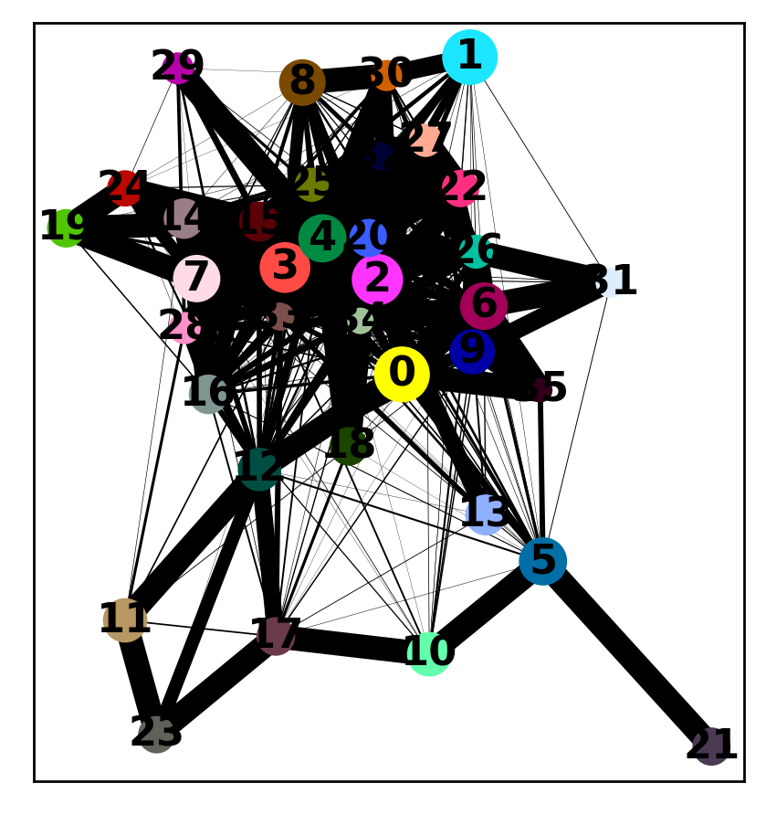
sc.tl.umap(jelly_adata_filt,random_state=42,spread=3.5,min_dist = 1.5,init_pos='paga')
/usr/local/lib/python3.6/dist-packages/umap/umap_.py:1158: RuntimeWarning: divide by zero encountered in power
return 1.0 / (1.0 + a * x ** (2 * b))
sc.pl.umap(jelly_adata_filt,color=['cellRanger_louvain'])
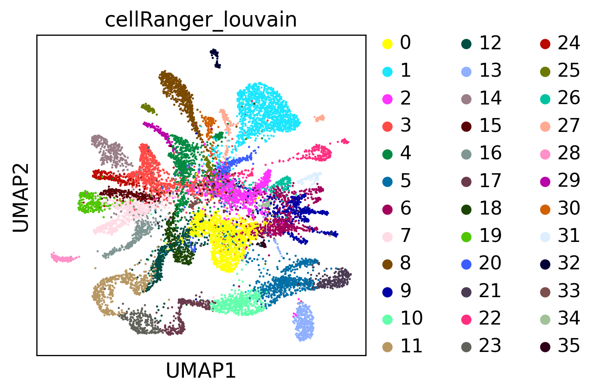
Plot Overlap in Cell Types #Read in filtered and clustered MARIMBA data
jelly_adata_filt = anndata.read("D1.1833")
sc.pl.umap(jelly_adata_filt,color=['cellRanger_louvain'])
#Check that embedding doesn't work with random cluster labels
import random
new_labels = list(jelly_adata_filt.obs['cellRanger_louvain'])
random.shuffle(new_labels)
jelly_adata_filt.obs['shuffled'] = pd.Categorical(new_labels)
sc.tl.paga(jelly_adata_filt, groups='shuffled',)
sc.pl.paga(jelly_adata_filt, color=['shuffled'])
sc.tl.umap(jelly_adata_filt,random_state=42,spread=3.5,min_dist = 1.5,init_pos='paga')
sc.pl.umap(jelly_adata_filt,color=['cellRanger_louvain','shuffled'])
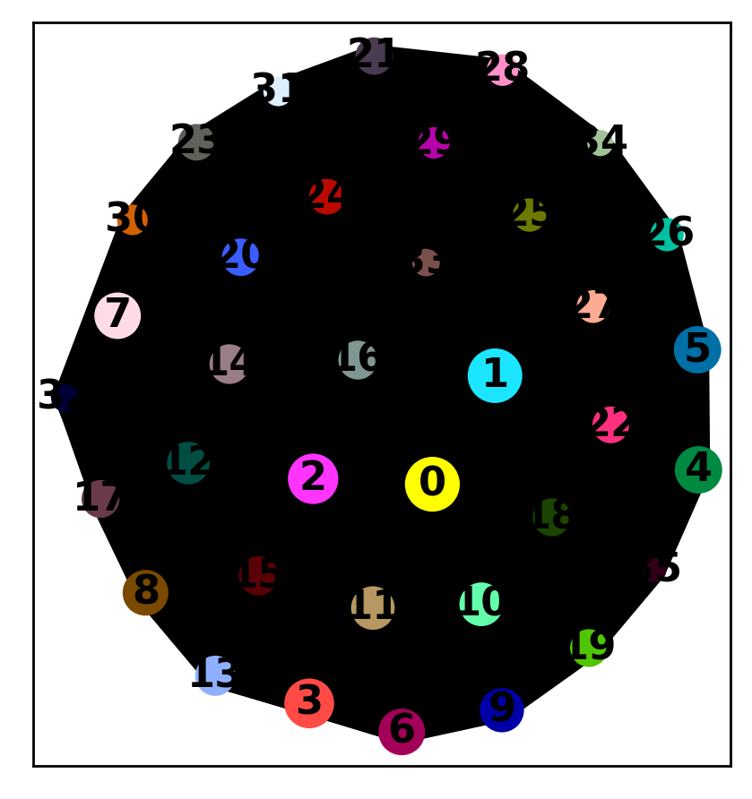
/usr/local/lib/python3.6/dist-packages/umap/umap_.py:1158: RuntimeWarning: divide by zero encountered in power
return 1.0 / (1.0 + a * x ** (2 * b))
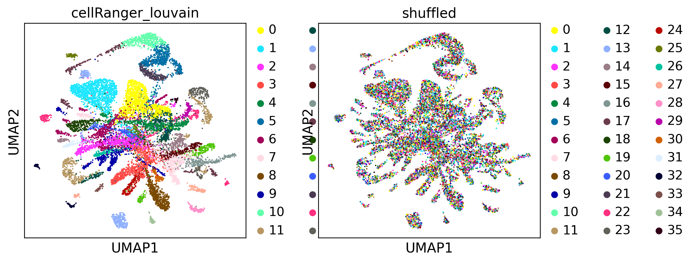
# len(set(jelly_adata_filt.var_names).intersection(bus_fs_trin.var_names))/len(jelly_adata_filt.var_names)
Comparing Gene Markers n=100
bus_fs_trin.obs['cellRanger_louvain'] = pd.Categorical(bus_fs_trin.obs['cellRanger_louvain'])
sc.tl.rank_genes_groups(jelly_adata_filt,groupby='cellRanger_louvain',n_genes=n,method='wilcoxon')
sc.tl.rank_genes_groups(bus_fs_trin,groupby='cellRanger_louvain',n_genes=n,method='wilcoxon')
/ usr / local / lib / python3 . 6 / dist - packages / statsmodels / tools / _testing . py : 19 : FutureWarning : pandas . util . testing is deprecated . Use the functions in the public API at pandas . testing instead .
import pandas.util.testing as tm
#Show pairwise overlap in top 100 names between all clusters, 36x36 grid
clus = np.unique(bus_fs_trin.obs['cellRanger_louvain'])
cuff = [[]]*len(clus) #np array of top 100 genes for each of 36 clusters
busFS = [[]]*len(clus)#np array of top 100 genes for each of 36 clusters
for c in clus:
cuff[c] = list(jelly_adata_filt.uns['rank_genes_groups']['names'][str(c)])
busFS[c] = list(bus_fs_trin.uns['rank_genes_groups']['names'][str(c)])
#https://stackoverflow.com/questions/52408910/python-pairwise-intersection-of-multiple-lists-then-sum-up-all-duplicates
from itertools import combinations_with_replacement
#Changed to calculate Jaccard Index
def intersect(i,j):
return len(set(cuff[i]).intersection(busFS[j]))/len(set(cuff[i]).union(busFS[j]))
def pairwise(clus):
# Initialise precomputed matrix (num of clusters, 36x36)
precomputed = np.zeros((len(clus),len(clus)), dtype='float')
# Initialise iterator over objects in X
iterator = combinations_with_replacement(range(0,len(clus)), 2)
# Perform the operation on each pair
for i,j in iterator:
precomputed[i,j] = intersect(i,j)
# Make symmetric and return
return precomputed + precomputed.T - np.diag(np.diag(precomputed))
pairCorrs = pairwise(clus)
plt.figure(figsize=(7,7))
plt.imshow(pairCorrs, cmap='viridis')
plt.colorbar()
plt.xticks(np.arange(0, 36, 1),fontsize=5)
plt.yticks(np.arange(0, 36, 1),fontsize=5)
plt.grid(color='black',linewidth=0.3)
plt.xlabel('Trinity Clusters')
plt.ylabel('MARIMBA Clusters')
plt.show()
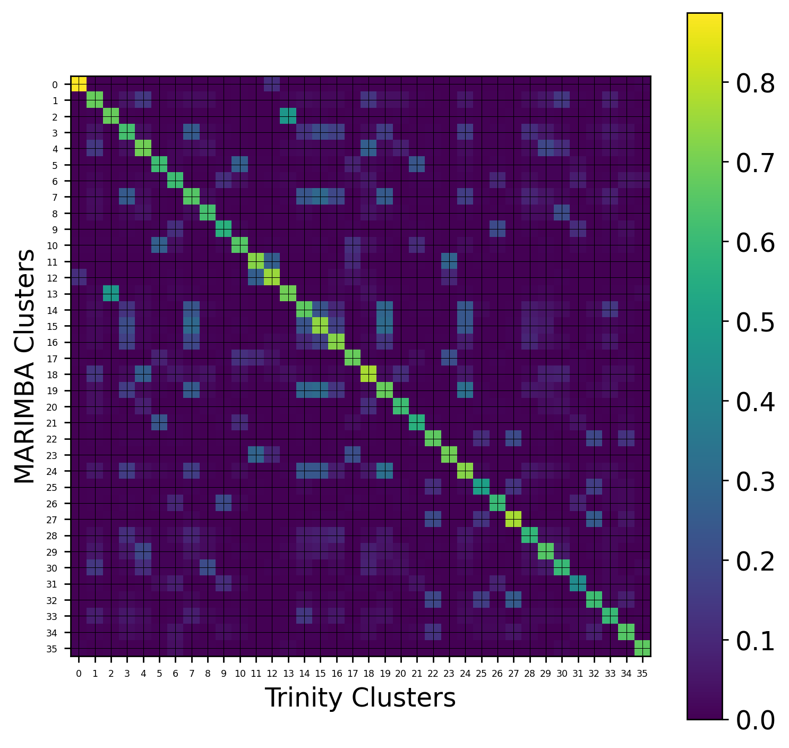
#jelly_adata_filt.write('cufflinks_clus_UMAP_PAGA.h5ad')
Neuron Analysis #Read in previously saved neurons (TRINITY) and filtered/clustered cufflinks data
neurons = anndata.read('D1.1804')
#Read in jelly_adata saved
jelly_adata_filt = anndata.read('D1.1833')
jelly_adata_raw = anndata.read("D1.1832")
jelly_adata_raw = jelly_adata_raw[list(jelly_adata_filt.obs_names),:]
/ usr / local / lib / python3 .6 / dist - packages / anndata / _core / anndata . py : 1094 : FutureWarning : is_categorical is deprecated and will be removed in a future version . Use is_categorical_dtype instead if not is_categorical ( df_full [ k ] ) : jelly_adata_raw.obs['orgID'] = pd.Categorical(jelly_adata_filt.obs['orgID'])
jelly_adata_raw.obs['fed'] = pd.Categorical(jelly_adata_filt.obs['fed'])
jelly_adata_raw.obs['starved'] = pd.Categorical(jelly_adata_filt.obs['starved'])
jelly_adata_raw.obs['cellRanger_louvain'] = pd.Categorical(jelly_adata_filt.obs['cellRanger_louvain'])
Trying to set attribute `.obs` of view, copying.
cuff_neurons = jelly_adata_raw[jelly_adata_raw.obs['cellRanger_louvain'].isin([31,26,6,9])]
sc.pp.filter_cells(cuff_neurons, min_counts=0)
sc.pp.filter_genes(cuff_neurons, min_counts=0)
sc.pp.normalize_per_cell(cuff_neurons, counts_per_cell_after=1e4)
sc.pp.log1p(cuff_neurons)
# sc.pp.scale(raw_overlap_combo, max_value=10)
sc.pp.highly_variable_genes(cuff_neurons,n_top_genes=2000,n_bins=50)
#sc.pp.filter_cells(neurons, min_counts=0)
# sc.pp.filter_genes(neurons, min_counts=0)
# sc.pp.highly_variable_genes(neurons,n_top_genes=3000)
cuff_neurons = cuff_neurons[:,cuff_neurons.var['highly_variable']]
sc.pp.scale(cuff_neurons, max_value=10)
sc.tl.pca(cuff_neurons, n_comps=60)
sc.pl.pca_variance_ratio(cuff_neurons, log=True)
#applyNCAEmbed(neurons,neurons.obs['knn_clus'])
sc.pp.neighbors(cuff_neurons,n_neighbors=15, n_pcs=15) #n_neighbors=5, n_pcs=15,use_rep='X_nca'
sc.tl.louvain(cuff_neurons,resolution=1,key_added='louvain_neur',random_state=42)#Clustering algorithm,resolution=0.5
/ usr / local / lib / python3 .6 / dist - packages / anndata / _core / anndata . py : 1094 : FutureWarning : is_categorical is deprecated and will be removed in a future version . Use is_categorical_dtype instead if not is_categorical ( df_full [ k ] ) : Trying to set attribute ` . obs ` of view , copying . / usr / local / lib / python3 .6 / dist - packages / anndata / _core / anndata . py : 1094 : FutureWarning : is_categorical is deprecated and will be removed in a future version . Use is_categorical_dtype instead if not is_categorical ( df_full [ k ] ) : / usr / local / lib / python3 .6 / dist - packages / anndata / _core / anndata . py : 1094 : FutureWarning : is_categorical is deprecated and will be removed in a future version . Use is_categorical_dtype instead if not is_categorical ( df_full [ k ] ) : / usr / local / lib / python3 .6 / dist - packages / anndata / _core / anndata . py : 1094 : FutureWarning : is_categorical is deprecated and will be removed in a future version . Use is_categorical_dtype instead if not is_categorical ( df_full [ k ] ) : / usr / local / lib / python3 .6 / dist - packages / anndata / _core / anndata . py : 1094 : FutureWarning : is_categorical is deprecated and will be removed in a future version . Use is_categorical_dtype instead if not is_categorical ( df_full [ k ] ) : / usr / local / lib / python3 .6 / dist - packages / scanpy / preprocessing / _simple . py : 806 : UserWarning : Revieved a view of an AnnData . Making a copy . view_to_actual ( adata ) 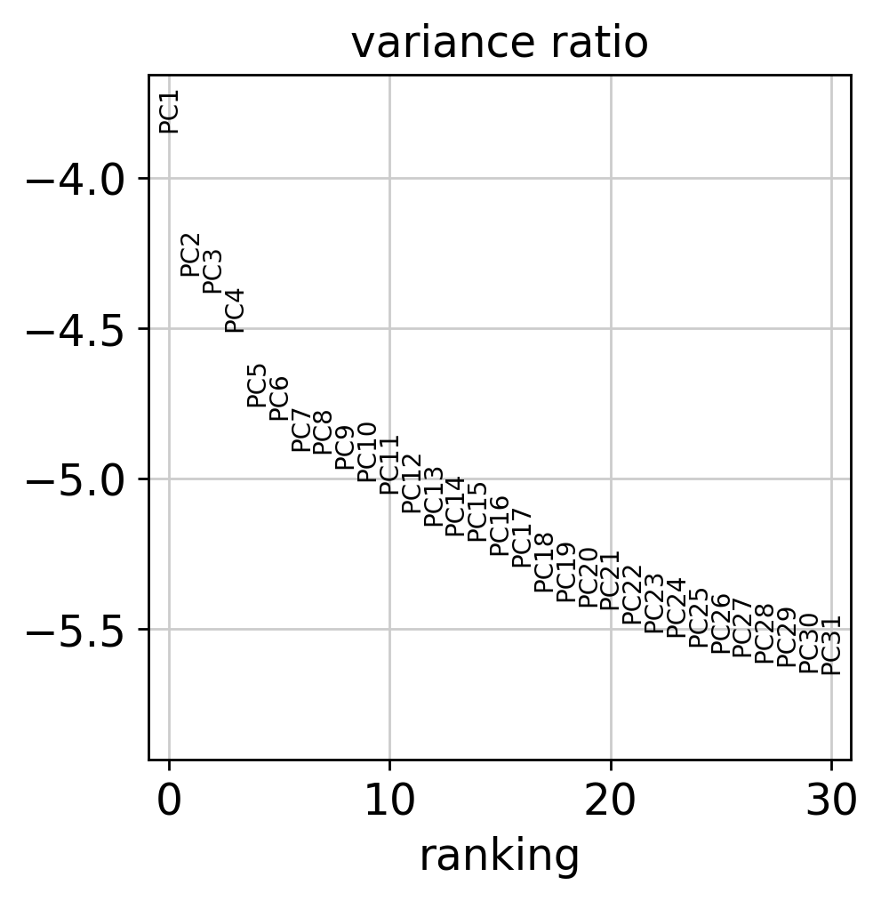
sc.tl.louvain(cuff_neurons,resolution=0.95,key_added='louvain_neur',random_state=42)#Clustering algorithm,resolution=0.5
#sc.tl.tsne(neurons, n_pcs=15,perplexity=25,random_state = 42) #learning_rate=250
sc.tl.umap(cuff_neurons,random_state=42,spread=2.5, min_dist=1)
cuff_neurons.obs['cellAtlasClusters'] = pd.Categorical(cuff_neurons.obs['cellRanger_louvain'] )
cuff_neurons = cuff_neurons[neurons.obs_names,:]
cuff_neurons.obs['louvain_neur_TRINITY'] = neurons.obs['louvain_neur']
sc.pl.umap(cuff_neurons, color=['louvain_neur','louvain_neur_TRINITY','cellAtlasClusters'],color_map='viridis',size=50,legend_loc='on data')
/ usr / local / lib / python3 .6 / dist - packages / anndata / _core / anndata . py : 1094 : FutureWarning : is_categorical is deprecated and will be removed in a future version . Use is_categorical_dtype instead if not is_categorical ( df_full [ k ] ) : Trying to set attribute ` . obs ` of view , copying . 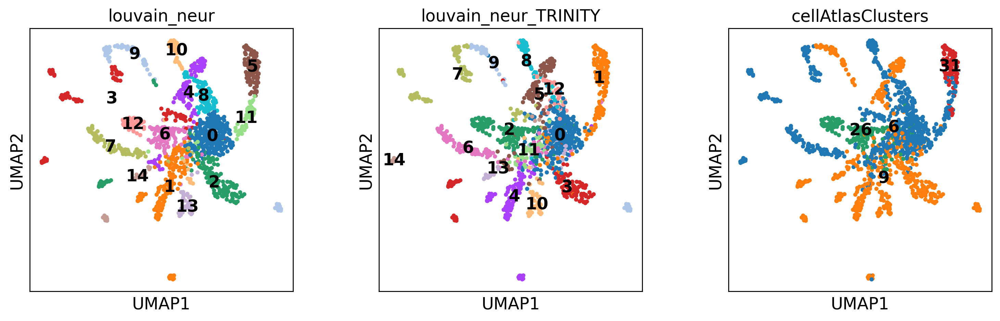
sc.tl.dendrogram(cuff_neurons,'louvain_neur',linkage_method='ward')
cuff_neurons.uns['dendrogram_louvain_neur'] = cuff_neurons.uns["dendrogram_['louvain_neur']"]
sc.tl.dendrogram(cuff_neurons,'louvain_neur_TRINITY',linkage_method='ward')
cuff_neurons.uns['dendrogram_louvain_neur_TRINITY'] = cuff_neurons.uns["dendrogram_['louvain_neur_TRINITY']"]
#XLOC_042761 instead of TRINITY_DN20104_c0_g1_i1.mrna1
topGenes = ['XLOC_030920','XLOC_035224',
'XLOC_040584','XLOC_019434','XLOC_042761','XLOC_017097',
'XLOC_021799','XLOC_041402','XLOC_004021','XLOC_008730',
'XLOC_014624','XLOC_030120']
forPlotAdata = jelly_adata_raw[jelly_adata_raw.obs['cellRanger_louvain'].isin([31,26,6,9])]
sc.pp.filter_cells(forPlotAdata, min_counts=0)
sc.pp.filter_genes(forPlotAdata, min_counts=0)
sc.pp.log1p(forPlotAdata)
forPlotAdata = forPlotAdata[cuff_neurons.obs_names,:]
forPlotAdata.obs['louvain_neur'] = cuff_neurons.obs['louvain_neur']
forPlotAdata.obs['louvain_neur_TRINITY'] = cuff_neurons.obs['louvain_neur_TRINITY']
forPlotAdata.uns['dendrogram_louvain_neur'] = cuff_neurons.uns['dendrogram_louvain_neur']
forPlotAdata.uns['dendrogram_louvain_neur_TRINITY'] = cuff_neurons.uns['dendrogram_louvain_neur_TRINITY']
neurons_sigTop = forPlotAdata[:,topGenes]
#labels = [allGenes[i] for i in forPlot]
labels = ['Ngn','PP01',
'*GRWGamide','*RFamide','*PRPamide','*GLWamide2',
'PP02','*YFamide','*FLFamide','PP03',
'PP04','PP17']
neurons_sigTop.var['names'] = labels
sc.set_figure_params(scanpy=True, fontsize=10)
sc.pl.heatmap(neurons_sigTop, labels, groupby='louvain_neur', dendrogram=True,show_gene_labels=True,
gene_symbols = 'names',swap_axes=False,
cmap='PuBuGn',standard_scale='var',save='neuronMarkers.pdf')
/ usr / local / lib / python3 .6 / dist - packages / anndata / _core / anndata . py : 1094 : FutureWarning : is_categorical is deprecated and will be removed in a future version . Use is_categorical_dtype instead if not is_categorical ( df_full [ k ] ) : Trying to set attribute ` . obs ` of view , copying . / usr / local / lib / python3 .6 / dist - packages / anndata / _core / anndata . py : 1094 : FutureWarning : is_categorical is deprecated and will be removed in a future version . Use is_categorical_dtype instead if not is_categorical ( df_full [ k ] ) : / usr / local / lib / python3 .6 / dist - packages / anndata / _core / anndata . py : 1094 : FutureWarning : is_categorical is deprecated and will be removed in a future version . Use is_categorical_dtype instead if not is_categorical ( df_full [ k ] ) : Trying to set attribute ` . obs ` of view , copying . Trying to set attribute ` . var ` of view , copying . / usr / local / lib / python3 .6 / dist - packages / anndata / _core / anndata . py : 1192 : FutureWarning : is_categorical is deprecated and will be removed in a future version . Use is_categorical_dtype instead if is_string_dtype ( df [ key ] ) and not is_categorical ( df [ key ] ) WARNING : saving figure to file figures / heatmapneuronMarkers . pdf 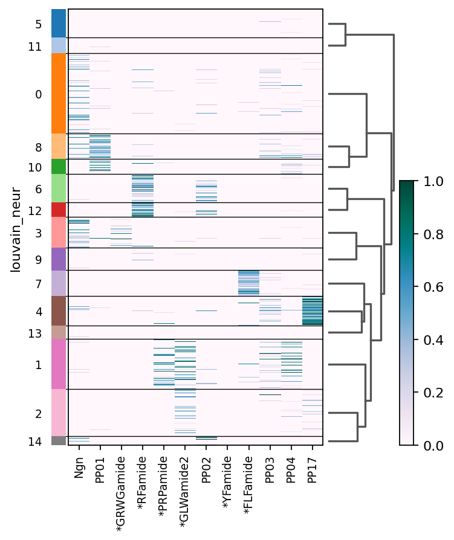
sc.pl.heatmap(neurons_sigTop, labels, groupby='louvain_neur_TRINITY', dendrogram=True,show_gene_labels=True,
gene_symbols = 'names',swap_axes=False,
cmap='PuBuGn',standard_scale='var',save='neuronMarkers.pdf')
WARNING : saving figure to file figures / heatmapneuronMarkers . pdf / usr / local / lib / python3 .6 / dist - packages / anndata / _core / anndata . py : 1192 : FutureWarning : is_categorical is deprecated and will be removed in a future version . Use is_categorical_dtype instead if is_string_dtype ( df [ key ] ) and not is_categorical ( df [ key ] ) / usr / local / lib / python3 .6 / dist - packages / anndata / _core / anndata . py : 1094 : FutureWarning : is_categorical is deprecated and will be removed in a future version . Use is_categorical_dtype instead if not is_categorical ( df_full [ k ] ) : 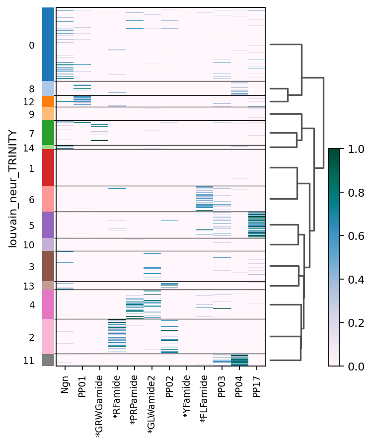
#Show pairwise overlap in top 100 names between all clusters, 36x36 grid
clus = np.unique(cuff_neurons.obs['louvain_neur'])
cuff = [[]]*len(clus) #np array of top 100 genes for each of 36 clusters
busFS = [[]]*len(clus)#np array of top 100 genes for each of 36 clusters
for c in clus:
cuff[int(c)] = list(cuff_neurons[cuff_neurons.obs['louvain_neur'].isin([c])].obs_names)
busFS[int(c)] = list(cuff_neurons[cuff_neurons.obs['louvain_neur_TRINITY'].isin([c])].obs_names)
/ usr / local / lib / python3 .6 / dist - packages / anndata / _core / anndata . py : 1094 : FutureWarning : is_categorical is deprecated and will be removed in a future version . Use is_categorical_dtype instead if not is_categorical ( df_full [ k ] ) : pairCorrs = pairwise(clus)
plt.figure(figsize=(7,7))
plt.imshow(pairCorrs, cmap='viridis')
plt.colorbar()
plt.xticks(np.arange(0, len(clus), 1),fontsize=5)
plt.yticks(np.arange(0, len(clus), 1),fontsize=5)
plt.grid(color='black',linewidth=0.3)
plt.xlabel('TRINITY Clusters')
plt.ylabel('Cufflinks Clusters')
plt.show()
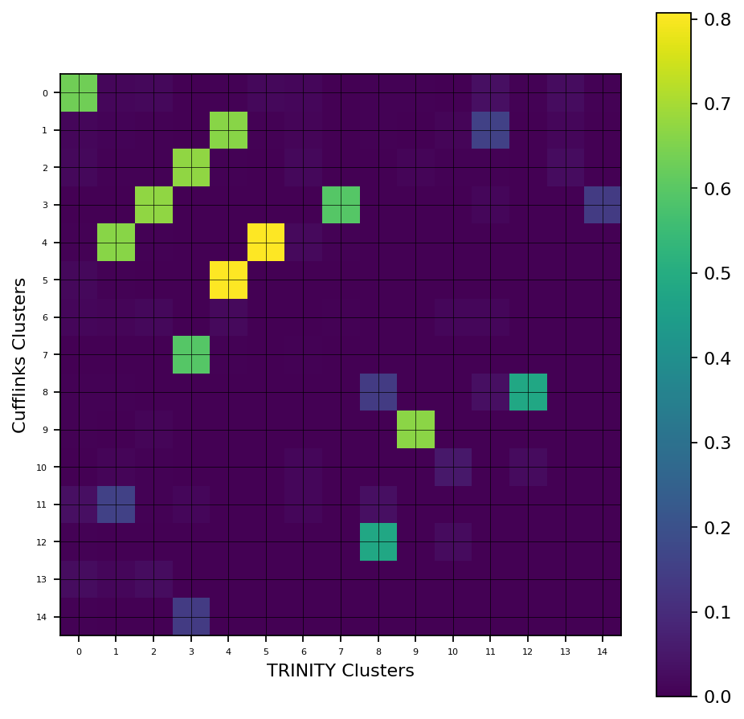
Check if application of TRINITY Louvain clusters is appropriate cuff_neurons = jelly_adata_filt[jelly_adata_filt.obs['cellRanger_louvain'].isin([31,26,6,9])]
cuff_neurons = cuff_neurons[neurons.obs_names,:]
cuff_neurons.obs['louvain_neur'] = neurons.obs['louvain_neur']
/ usr / local / lib / python3 .6 / dist - packages / anndata / _core / anndata . py : 1094 : FutureWarning : is_categorical is deprecated and will be removed in a future version . Use is_categorical_dtype instead if not is_categorical ( df_full [ k ] ) : Trying to set attribute ` . obs ` of view , copying . n=5
neurons.obs['louvain_neur'] = pd.Categorical(neurons.obs['louvain_neur'])
sc.tl.rank_genes_groups(cuff_neurons,groupby='louvain_neur',n_genes=n,method='wilcoxon')
sc.tl.rank_genes_groups(neurons,groupby='louvain_neur',n_genes=n,method='wilcoxon',)
/ usr / local / lib / python3 .6 / dist - packages / scanpy / tools / _rank_genes_groups . py : 408 : RuntimeWarning : invalid value encountered in log2 foldchanges [ global_indices ] #Show pairwise overlap in top 100 names between all clusters, 36x36 grid
clus = np.unique(neurons.obs['louvain_neur'])
cuff = [[]]*len(clus) #np array of top 100 genes for each of 36 clusters
busFS = [[]]*len(clus)#np array of top 100 genes for each of 36 clusters
for c in clus:
cuff[int(c)] = list(cuff_neurons.uns['rank_genes_groups']['names'][str(c)])
busFS[int(c)] = list(neurons.uns['rank_genes_groups']['names'][str(c)])
pairCorrs = pairwise(clus)
plt.figure(figsize=(7,7))
plt.imshow(pairCorrs, cmap='viridis')
plt.colorbar()
plt.xticks(np.arange(0, len(clus), 1),fontsize=5)
plt.yticks(np.arange(0, len(clus), 1),fontsize=5)
plt.grid(color='black',linewidth=0.3)
plt.xlabel('TRINITY Clusters')
plt.ylabel('Cufflinks Clusters')
plt.show()
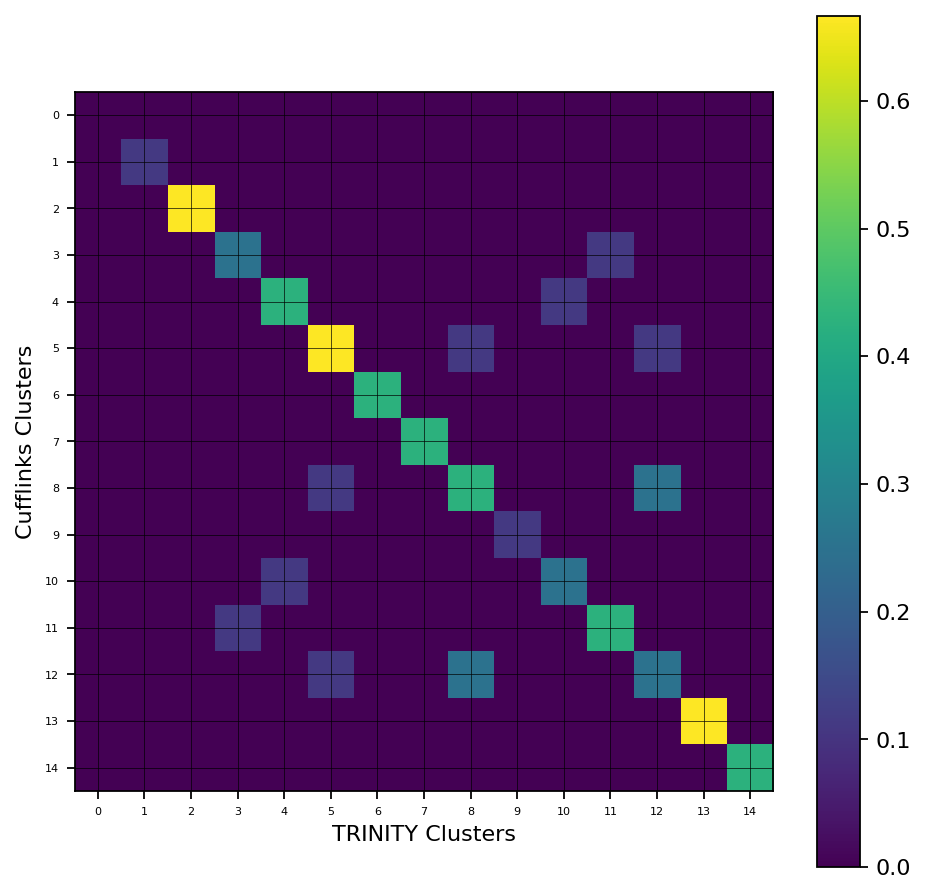
neurons.uns['rank_genes_groups']['names']['0']
array(['XLOC_011074', 'XLOC_015355', 'XLOC_044603', 'XLOC_030920',
'XLOC_004445'], dtype=object)
cuff_neurons.uns['rank_genes_groups']['names']['0']
array(['XLOC_030930', 'XLOC_029992', 'XLOC_010444', 'XLOC_003896',
'XLOC_006929'], dtype=object)